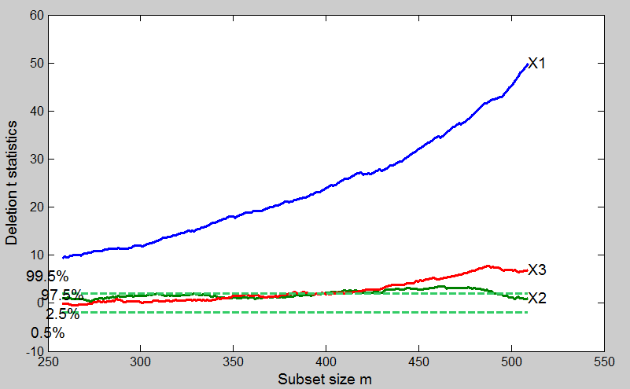

Robust Forward Variable Selection using Added t tests
Since the search orders the observations by the magnitude of their residuals from the fitted subsets, the value of $s^2$ increases during the search, although not necessarily monotonically. As a consequence, even in the absence of outliers and model inadequacies, the values of the t-statistics for the parameters in the model decrease during the search and are hard to interpret. Atkinson and Riani (2002) in order to overcome this problem use the method of added variables to provide plots of t-tests which are orthogonal to the search.
In order to obtain useful forward plots of t-tests we write the regression model for all $n$ observations as
$$ y=Q\theta+\varepsilon = X \beta + w \gamma +\varepsilon , $$
where $Q$ is $n \times p$, the errors $\varepsilon$ satisfy the second-order assumptions with variances $\sigma^2$ and $\gamma$ is a scalar. In turn we take each of the columns of $Q$ as the vector $w$, except for the column corresponding to the constant term in the model. The well-established approach of added variables (see for example Atkinson and Riani, 2000, § 2.2) leads to an expression for the least squares estimator of $\gamma$ as a function of residuals from the regression of $y$ and $w$ on $X$.
More specifically:
$$ \hat \gamma = \overset{*}{w}^T e /(\overset{*}{w}^T\overset{*}{w})=w^T Ay/(w^T Aw) \quad % \quad \quad \textrm{var}(\hat \gamma) = \sigma^2/(\overset{*}{w}^T\overset{*}{w}) = \sigma^2/(w^T Aw) . $$The residual mean square estimator of $s^2$ from regression on $X$ and $w$, can be written as
$$ (n-p)s_w^2 = y^T Ay - (y^T Aw)^2/(w^T Aw). $$The t-statistic for testing that $\gamma =0 \;(t_{\gamma})$ is thus
$$ t_{\gamma}= \hat \gamma /\{s_w^2/(w^TAw)\}^{\frac{1}{2}}. $$This added-variable test is not affected by the ordering of the data and so has the required $t$ distribution.
More precisely, in searches using the added-variable test, we fit the reduced model $E(Y)=Xb$, the residuals from which are used to determine the progress of the search. We do not include $w$ in the model. The choice of observations to be included in the subset thus depends only on $y$ and $X$. The ordering of observations using $X$ therefore does not affect the null distribution of the test statistic.
Example 1
In the analysis which follows we analyze the transformed fidelity data which have been used in previous pages and other dataset
% Load the data
load('loyalty.txt');
% define y and X
y=loyalty(:,4);
X=loyalty(:,1:3);
% transform y
y1=y.^(0.4);
% Compute forward added T tests
[out]=FSRaddt(y1,X,'plots',1,'quant',[0.025 0.975]);
The monitoring of added T-tests shows that the values of the coefficient for X1 rises steadily during the forward search and it is not influenced by the entrance of the final observations. Same thing for X3 even if this variable even if significant is less important than X3 to explain the variability of the response.
For the search which excludes X2 we can see that while in the central part of search the curve lies close to the rejection region, in the part m=400 -m=500 the curve lies above out of the rejection line. Finally the units which enter the search in the final part make the value of T-statistic become non significant.

Example 2
Neter et al. (1996, pp. 334, 438) analyse 108 observations on the times of survival
of patients who had a particular kind of liver surgery. The four explanatory variables
are as follows:
x1 is a blood clotting score;
x2 is a prognostic index, which includes the age of the patient;
x3 is an enzyme function test score;
x4 is a score for liver function.
The response is survival time.
We follow Neter et al. (1996) and use the logarithm to base ten of time as the response. It seems clear when all 108 observations are fitted that the constant and the first three explanatory variables are all highly significant, but that x4 need not be included in the model. We now investigate how this conclusion depends on individual observations. In order to use the method of added variables, each has to be omitted in turn and be treated as the added variable w. Four forward searches are therefore used, each using three of the four variables. The resulting plot of the four forward t-statistics is in Figure below.
load('hospitalFS.txt');
y1=hospitalFS(:,5);
X=hospitalFS(:,1:4);
% Compute forward added T tests
[out]=FSRaddt(y1,X,'plots',1,'quant',[0.025 0.975]);
These curves behave as we would hope: initially no variable is significant, although x3 is briefly significant at the 1% level around m=20. The curves then rise smoothly to their values when m=n, with the nonsignificant value of t4 showing seemingly random fluctuations.
The trajectory is devoid of sudden jump and this indicates the absence of individual influential observations.